¶ It was 1967 and I was working in a Honda shop assembling new Honda motorcycles out of their shipping crates. On the side of one of the crates it said new JIS screw. OK, JIS screw? What the heck is a JIS screw? I asked and was told to stop asking stupid questions and get back to work. Which was shopease for "We don't know but we don't want to admit it." So I went back to my wrenches and forgot about it. It was a long time before I figured out what JIS meant. There just was no information that was readily available in those days. Fortunately you have the Internet so we can do a bit better now.
If you look at a lot of Phillips head screws on the crankcases of just about all motorcycles you will find a goodly number are damaged. This is because all Phillips head screws are not created equal. Now Henry F. Phillips was a businessman from Oregon who produced a good screw head to be used by automated production lines that use powered screwdrivers. It seems he, Phillips, bought the rights to this design from a guy named Thompson who invented it in 1935. Today we have a large number of Phillips screw types running around but generally only one type is used on motorcycles, the JIS type. Do an internet search and you will find a lot of different types of Phillips head screws out there.
That is the problem. There are different types of Phillips head screwdrivers around but only one type fits JIS screws. Look at the examples below.
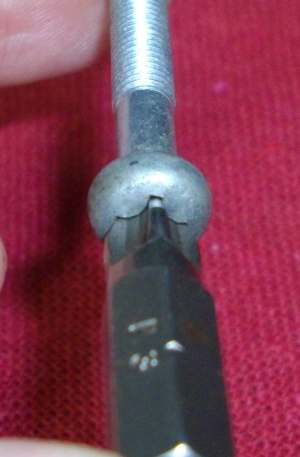 Good Fit |
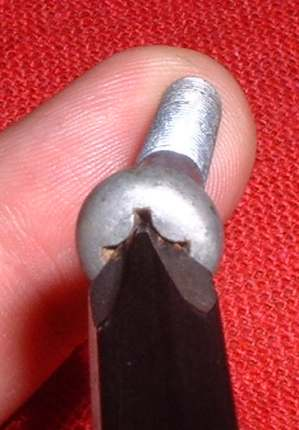 Bad Fit |
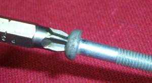 Phillips screwdriver that fits good. |
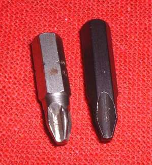 Good bit, Bad bit. |
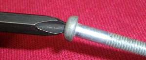 Phillips screwdriver that fits not so good. |
The problem is that while both of these Phillips screwdriver bits fit a JIS screw head, one of them is a bad fit. Now if you take a good impact driver with a bad fitting bit and whack that puppy good and hard with a big hammer most times the screw will come out. Trouble is when the screw is in extra tight and the bit does not fit good the screw head tends to camout and round off the edges of both the screw head and screwdriver bit. The power of the screwdriver is not transferred to the screw head efficiently.
Look closely at the ends of these two Phillips screwdriver bits.
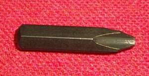 Bad screwdriver bit for JIS screws. |
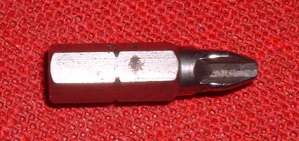 Good screwdriver bit for JIS screws. |
That is the big problem. You are working hard and want to get the job done. It looks like it fits so it must fit, right? No, not right. To make matters worse, it is even hard to tell the right Phillips bits from the wrong Phillips bit. Well, here is an idea. Try the bit or screwdriver in a good JIS screw and see how it fits. It should fit tight and snug. If it fits loose take the time to find the right screwdriver or bit. Yes, it doesn't really take all that much time to drill out a buggered up screw head but it is still ten minutes added to the job. Drill out four screws and you have lost a lot of time on that job.
Japanese Phillips head screws come in two flavors. ISO and JIS. The difference between the two is the size of the head. The ISO type has a bigger head then the JIS type used on most motorcycles.
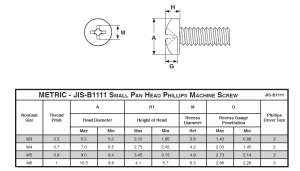 JIS Screw Specifications |
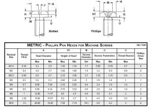 ISO Screw Specifications |
To complicate things some of the JIS screws have a punch mark on their heads to indicate they are JIS and then again a lot do not have the mark.
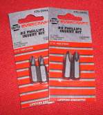
Just to give you an idea of how crazy things have gotten below is a security bit set I have. Although I have tried to get all the bit types and styles I am still missing many of them.
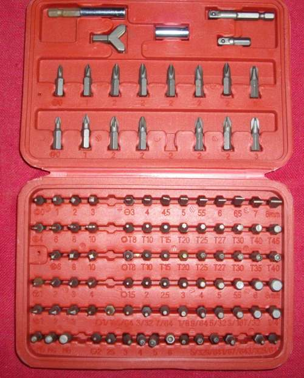

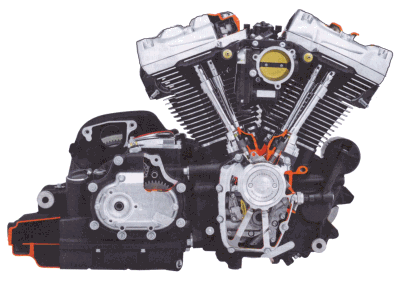 |
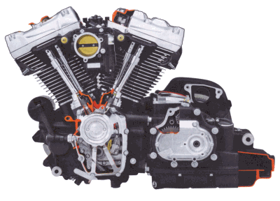 |
Copyright © 1999-2003 dansmc.com. All rights reserved.